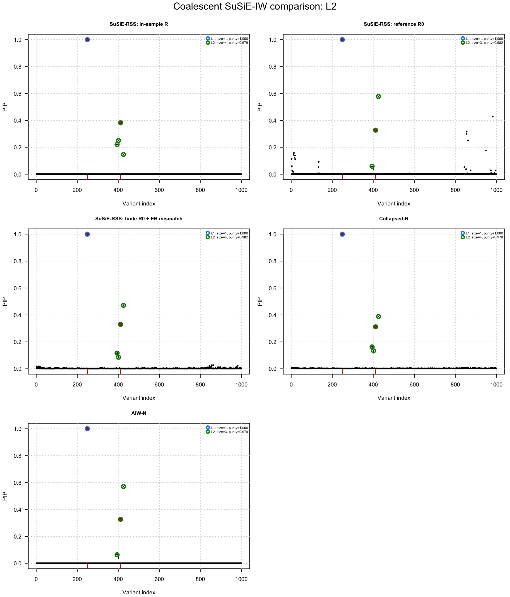
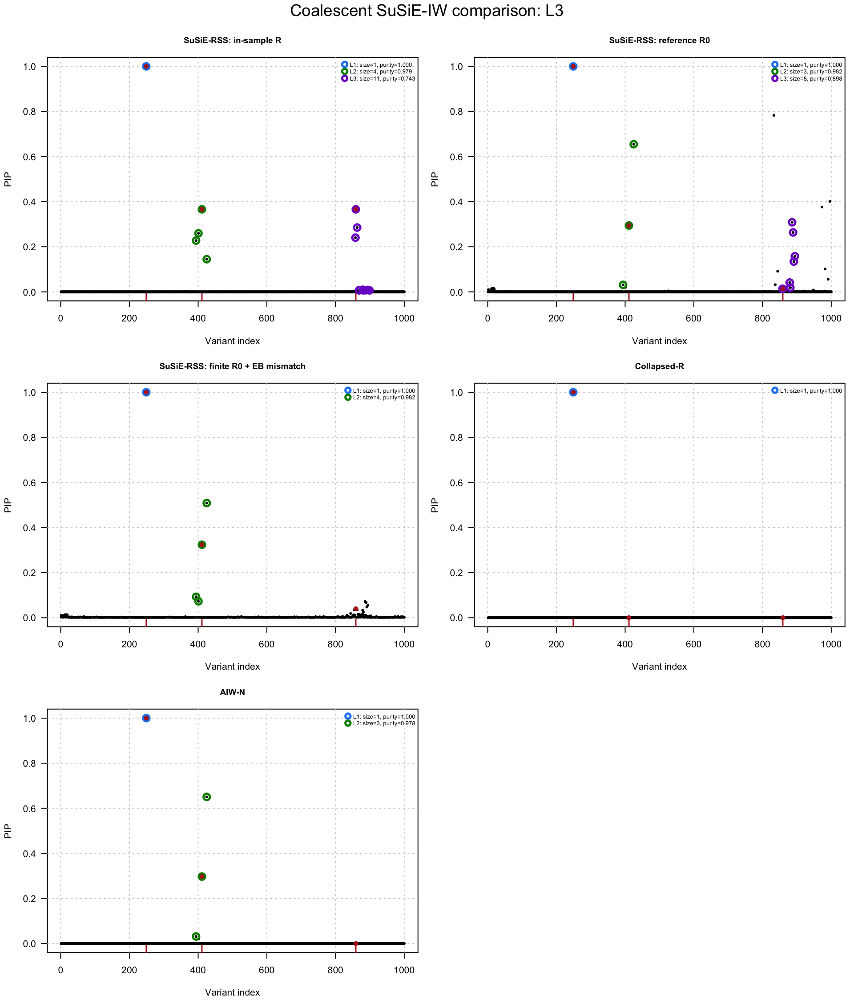

Last updated: 2026-08-21
Checks: 7 0
Knit directory: susie-IW/
This reproducible R Markdown analysis was created with workflowr (version 1.7.2). The Checks tab describes the reproducibility checks that were applied when the results were created. The Past versions tab lists the development history.
Great! Since the R Markdown file has been committed to the Git repository, you know the exact version of the code that produced these results.
Great job! The global environment was empty. Objects defined in the global environment can affect the analysis in your R Markdown file in unknown ways. For reproduciblity it’s best to always run the code in an empty environment.
The command set.seed(20260820) was run prior to running
the code in the R Markdown file. Setting a seed ensures that any results
that rely on randomness, e.g. subsampling or permutations, are
reproducible.
Great job! Recording the operating system, R version, and package versions is critical for reproducibility.
Nice! There were no cached chunks for this analysis, so you can be confident that you successfully produced the results during this run.
Great job! Using relative paths to the files within your workflowr project makes it easier to run your code on other machines.
Great! You are using Git for version control. Tracking code development and connecting the code version to the results is critical for reproducibility.
The results in this page were generated with repository version 0a5f38d. See the Past versions tab to see a history of the changes made to the R Markdown and HTML files.
Note that you need to be careful to ensure that all relevant files for
the analysis have been committed to Git prior to generating the results
(you can use wflow_publish or
wflow_git_commit). workflowr only checks the R Markdown
file, but you know if there are other scripts or data files that it
depends on. Below is the status of the Git repository when the results
were generated:
Ignored files:
Ignored: .DS_Store
Ignored: analysis/.DS_Store
Ignored: experiments/.DS_Store
Ignored: plos-paper/
Untracked files:
Untracked: experiments/coalescent-susie-iw-benchmark-100rep-results.csv
Untracked: experiments/coalescent-susie-iw-benchmark-100rep-workers/
Untracked: experiments/coalescent-susie-iw-plus-rss-eb-benchmark-100rep-average-over-L-summary.csv
Untracked: experiments/coalescent-susie-iw-plus-rss-eb-benchmark-100rep-eb-diagnostics.csv
Untracked: experiments/coalescent-susie-iw-plus-rss-eb-benchmark-100rep-results.csv
Untracked: experiments/coalescent-susie-iw-plus-rss-eb-benchmark-100rep-summary.csv
Untracked: experiments/coalescent-susie-iw-plus-rss-eb-benchmark-100rep.rds
Untracked: experiments/coalescent-susie-rss-eb-benchmark-100rep-workers/
Untracked: experiments/figures/coalescent-susie-iw-plus-rss-eb-100rep-mean-set-size-average-over-L.pdf
Untracked: experiments/figures/coalescent-susie-iw-plus-rss-eb-100rep-mean-set-size-average-over-L.png
Untracked: experiments/figures/coalescent-susie-iw-plus-rss-eb-100rep-mean-set-size-by-L.pdf
Untracked: experiments/figures/coalescent-susie-iw-plus-rss-eb-100rep-mean-set-size-by-L.png
Untracked: experiments/figures/coalescent-susie-iw-plus-rss-eb-100rep-mean-set-size-mismatch-aware-boxplots-L1.pdf
Untracked: experiments/figures/coalescent-susie-iw-plus-rss-eb-100rep-mean-set-size-mismatch-aware-boxplots-L1.png
Untracked: experiments/figures/coalescent-susie-iw-plus-rss-eb-100rep-mean-set-size-mismatch-aware-boxplots-L2.pdf
Untracked: experiments/figures/coalescent-susie-iw-plus-rss-eb-100rep-mean-set-size-mismatch-aware-boxplots-L2.png
Untracked: experiments/figures/coalescent-susie-iw-plus-rss-eb-100rep-mean-set-size-mismatch-aware-boxplots-L3.pdf
Untracked: experiments/figures/coalescent-susie-iw-plus-rss-eb-100rep-mean-set-size-mismatch-aware-boxplots-L3.png
Untracked: experiments/figures/coalescent-susie-iw-plus-rss-eb-100rep-performance-L1.pdf
Untracked: experiments/figures/coalescent-susie-iw-plus-rss-eb-100rep-performance-L1.png
Untracked: experiments/figures/coalescent-susie-iw-plus-rss-eb-100rep-performance-L2.pdf
Untracked: experiments/figures/coalescent-susie-iw-plus-rss-eb-100rep-performance-L2.png
Untracked: experiments/figures/coalescent-susie-iw-plus-rss-eb-100rep-performance-L3.pdf
Untracked: experiments/figures/coalescent-susie-iw-plus-rss-eb-100rep-performance-L3.png
Untracked: experiments/figures/coalescent-susie-iw-plus-rss-eb-100rep-performance.pdf
Untracked: experiments/figures/coalescent-susie-iw-plus-rss-eb-100rep-performance.png
Untracked: experiments/figures/coalescent-susie-iw-plus-rss-eb-100rep-selected-L.pdf
Untracked: experiments/figures/coalescent-susie-iw-plus-rss-eb-100rep-selected-L.png
Untracked: experiments/figures/coalescent-susie-iw-plus-rss-eb-mean-set-size-average-over-L.pdf
Untracked: experiments/figures/coalescent-susie-iw-plus-rss-eb-mean-set-size-average-over-L.png
Untracked: experiments/figures/coalescent-susie-iw-plus-rss-eb-mean-set-size-by-L.pdf
Untracked: experiments/figures/coalescent-susie-iw-plus-rss-eb-mean-set-size-by-L.png
Untracked: experiments/figures/coalescent-susie-iw-plus-rss-eb-mean-set-size-mismatch-aware-boxplots-L1.pdf
Untracked: experiments/figures/coalescent-susie-iw-plus-rss-eb-mean-set-size-mismatch-aware-boxplots-L1.png
Untracked: experiments/figures/coalescent-susie-iw-plus-rss-eb-mean-set-size-mismatch-aware-boxplots-L2.pdf
Untracked: experiments/figures/coalescent-susie-iw-plus-rss-eb-mean-set-size-mismatch-aware-boxplots-L2.png
Untracked: experiments/figures/coalescent-susie-iw-plus-rss-eb-mean-set-size-mismatch-aware-boxplots-L3.pdf
Untracked: experiments/figures/coalescent-susie-iw-plus-rss-eb-mean-set-size-mismatch-aware-boxplots-L3.png
Unstaged changes:
Modified: experiments/05-compare-susie-rss-eb-diagnostics.csv
Modified: experiments/05-compare-susie-rss-generating-settings.csv
Modified: experiments/05-compare-susie-rss-summary.csv
Modified: experiments/coalescent-susie-iw-plus-rss-eb-benchmark-average-over-L-summary.csv
Modified: experiments/coalescent-susie-iw-plus-rss-eb-benchmark.rds
Modified: experiments/figures/05-compare-susie-rss-L2.pdf
Modified: experiments/figures/05-compare-susie-rss-L2.png
Modified: experiments/figures/05-compare-susie-rss-L3.pdf
Modified: experiments/figures/05-compare-susie-rss-L3.png
Modified: experiments/figures/coalescent-susie-iw-plus-rss-eb-performance-L1.pdf
Modified: experiments/figures/coalescent-susie-iw-plus-rss-eb-performance-L2.pdf
Modified: experiments/figures/coalescent-susie-iw-plus-rss-eb-performance-L3.pdf
Modified: experiments/figures/coalescent-susie-iw-plus-rss-eb-performance.pdf
Modified: experiments/figures/coalescent-susie-iw-plus-rss-eb-selected-L.pdf
Modified: experiments/run-coalescent-susie-iw-benchmark.R
Modified: experiments/summarize-coalescent-susie-rss-eb-benchmark.R
Note that any generated files, e.g. HTML, png, CSS, etc., are not included in this status report because it is ok for generated content to have uncommitted changes.
These are the previous versions of the repository in which changes were
made to the R Markdown (analysis/05-compare-susie-rss.Rmd)
and HTML (docs/05-compare-susie-rss.html) files. If you’ve
configured a remote Git repository (see ?wflow_git_remote),
click on the hyperlinks in the table below to view the files as they
were in that past version.
| File | Version | Author | Date | Message |
|---|---|---|---|---|
| Rmd | 0a5f38d | dodat-stats | 2026-08-21 | Update SuSiE-RSS comparison and index |
| html | 1db9612 | dodat-stats | 2026-08-20 | Publish workflowr site |
| Rmd | e430a95 | dodat-stats | 2026-08-20 | Add SuSiE-IW analyses and experiment results |
This page compares the project’s mismatch-aware methods with the
empirical- Bayes LD mismatch correction in
susieR::susie_rss(). The simulation matches the coalescent SuSiE-IW
simulation: coalescent reference LD is followed by a
correlation-standardized inverse-Wishart draw of the in-sample LD matrix
and SuSiE-IW summary statistics with two or three causal effects.
The susieR fit follows the official LD mismatch workflow:
susie_rss(..., R_finite = N0, R_mismatch = "eb")R_finite accounts for estimation noise from the finite
reference panel, and R_mismatch = "eb" estimates an
additional region-wide mismatch component. The analysis reports
R_finite_diagnostics because the corrected result should
not be treated as automatically reliable.
The five comparisons are in-sample SuSiE-RSS, reference-LD SuSiE-RSS,
reference-LD SuSiE-RSS with finite-panel and empirical-Bayes mismatch
correction, collapsed-\(R\), and AIW-N.
This page requires a susieR version that provides R_finite,
R_mismatch, and susie_rss_control (version
0.16.6 or newer at the time this page was written).
Set run_analysis: false in the YAML header to skip the
computationally nontrivial coalescent simulation and fits during a
workflowr build.
find_project_root <- function(path = getwd()) {
path <- normalizePath(path, mustWork = TRUE)
repeat {
required <- c(
file.path(path, "code", "01-collapsed-R.R"),
file.path(path, "code", "02-AIW-and-AIW-N.R"),
file.path(path, "code", "03-SER-fallback-and-plot.R")
)
if (all(file.exists(required))) return(path)
parent <- dirname(path)
if (identical(parent, path)) {
stop("Could not find the susie-IW project root")
}
path <- parent
}
}
project_root <- find_project_root()
source(file.path(project_root, "code", "01-collapsed-R.R"))
source(file.path(project_root, "code", "02-AIW-and-AIW-N.R"))
source(file.path(project_root, "code", "03-SER-fallback-and-plot.R"))
if (!requireNamespace("susieR", quietly = TRUE)) {
stop("Install the current susieR package before running this comparison")
}
required_susie_rss_arguments <- c("R_finite", "R_mismatch", "control")
missing_susie_rss_arguments <- setdiff(
required_susie_rss_arguments,
names(formals(susieR::susie_rss))
)
if (length(missing_susie_rss_arguments)) {
stop(
"Installed susieR ", as.character(utils::packageVersion("susieR")),
" does not support the current mismatch interface (missing: ",
paste(missing_susie_rss_arguments, collapse = ", "), "). ",
"Install susieR >= 0.16.6, for example with ",
"remotes::install_github('stephenslab/susieR')."
)
}
# -------------------------------------------------------------------------
# Simulation and fitting settings. Edit this block to select the experiment.
# -------------------------------------------------------------------------
seed <- 1L
J <- 1000L
N0 <- 2000L # reference-panel sample size
coalescent_sample_size <- 2000L # second population used for common-SNP QC
N <- 200000L # GWAS sample size
true_eta0 <- 100
h2 <- 1e-3
true_lambda <- 1e-3
true_L_values <- c(2L, 3L)
maximum_fitted_L <- 5L
lambda_grid <- c(1e-5, 1e-4, 1e-3, 2e-3, 4e-3, 6e-3, 8e-3, 1e-2)
collapsed_eta0_multiplier <- 1.677
aiwn_eta0_multiplier <- 1.424
if (J <= max(true_L_values) || maximum_fitted_L < max(true_L_values) ||
maximum_fitted_L >= J) {
stop("Require max(true_L_values) <= maximum_fitted_L < J")
}
output_root <- file.path(project_root, "experiments")
figure_directory <- file.path(output_root, "figures")
dir.create(figure_directory, recursive = TRUE, showWarnings = FALSE)
output_prefix <- file.path(output_root, "05-compare-susie-rss")
figure_prefix <- file.path(figure_directory, "05-compare-susie-rss")
# -------------------------------------------------------------------------
# Generate empirical reference LD from the same human coalescent model used in
# analysis/02-coalescent-IW-simulation.Rmd.
# -------------------------------------------------------------------------
simulate_coalescent_R0 <- function(
J, N0, second_population_size = N0, seed = 1L,
chromosome = "chr22", start = 20e6, end = 21e6,
split_time = 10L) {
if (!requireNamespace("reticulate", quietly = TRUE)) {
stop("Install the R package reticulate")
}
if (!nzchar(Sys.getenv("RETICULATE_PYTHON"))) {
python <- Sys.which("python3")
if (nzchar(python)) {
Sys.setenv(RETICULATE_PYTHON = python)
reticulate::use_python(python, required = FALSE)
}
}
stdpopsim <- reticulate::import("stdpopsim")
msprime <- reticulate::import("msprime")
species <- stdpopsim$get_species("HomSap")
contig <- species$get_contig(
chromosome, left = as.integer(start), right = as.integer(end)
)
demography <- msprime$Demography()
demography$add_population(name = "ANC", initial_size = 20000L)
demography$add_population(name = "POP1", initial_size = 100000L)
demography$add_population(name = "POP2", initial_size = 100000L)
demography$add_population_split(
time = as.integer(split_time),
derived = list("POP1", "POP2"), ancestral = "ANC"
)
models <- list(
msprime$DiscreteTimeWrightFisher(duration = 100L),
msprime$StandardCoalescent()
)
tree_sequence <- msprime$sim_ancestry(
samples = reticulate::dict(
POP1 = as.integer(second_population_size),
POP2 = as.integer(N0)
),
demography = demography,
recombination_rate = contig$recombination_map,
model = models,
random_seed = as.integer(seed)
)
tree_sequence <- msprime$sim_mutations(
tree_sequence, rate = 1.29e-8, random_seed = 1L
)
population_ids <- list()
for (population in reticulate::iterate(tree_sequence$populations())) {
population_ids[[population$metadata$name]] <- population$id
}
genotype_haploid <- tree_sequence$genotype_matrix()
to_diploid <- function(sample_ids) {
columns <- as.integer(sample_ids) + 1L
haplotypes <- genotype_haploid[, columns, drop = FALSE]
genotypes <- haplotypes[, seq(1L, ncol(haplotypes), by = 2L)] +
haplotypes[, seq(2L, ncol(haplotypes), by = 2L)]
t(genotypes)
}
genotype_1 <- to_diploid(tree_sequence$samples(
population = as.integer(population_ids$POP1)
))
genotype_0 <- to_diploid(tree_sequence$samples(
population = as.integer(population_ids$POP2)
))
frequency_1 <- colMeans(genotype_1) / 2
frequency_0 <- colMeans(genotype_0) / 2
common <- frequency_1 > 0.05 & frequency_1 < 0.95 &
frequency_0 > 0.05 & frequency_0 < 0.95
genotype_0 <- genotype_0[, common, drop = FALSE]
if (ncol(genotype_0) < J) {
stop("The coalescent region contains fewer than J common variants")
}
set.seed(seed)
first_column <- if (ncol(genotype_0) == J) {
1L
} else {
sample.int(ncol(genotype_0) - J + 1L, 1L)
}
columns <- first_column + seq_len(J) - 1L
R0 <- stats::cor(genotype_0[, columns, drop = FALSE])
R0 <- (R0 + t(R0)) / 2
diag(R0) <- 1
R0
}
message("Generating coalescent reference LD")
R0 <- simulate_coalescent_R0(
J = J, N0 = N0, second_population_size = coalescent_sample_size,
seed = seed
)
# -------------------------------------------------------------------------
# Draw in-sample LD under the correlation-standardized SuSiE-IW simulation.
# -------------------------------------------------------------------------
Rbar_true <- (1 - true_lambda) * R0 + true_lambda * diag(J)
set.seed(2000000L + 10000L * seed + J + as.integer(true_eta0))
precision <- stats::rWishart(
1L,
df = true_eta0 + J + 1L,
Sigma = solve(true_eta0 * Rbar_true)
)[, , 1L]
R <- stats::cov2cor(solve(precision))
R <- (R + t(R)) / 2
diag(R) <- 1
choose_nested_weak_ld_variants <- function(R) {
candidates <- unique(as.integer(round(seq(
max(2, 0.08 * nrow(R)), min(nrow(R) - 1, 0.92 * nrow(R)),
length.out = min(250L, nrow(R) - 2L)
))))
minimum_separation <- max(8L, floor(nrow(R) / 12))
first <- candidates[which.min(abs(candidates - round(nrow(R) / 4)))]
available <- candidates[abs(candidates - first) >= minimum_separation]
second <- available[which.min(abs(R[first, available]))]
available <- candidates[
abs(candidates - first) >= minimum_separation &
abs(candidates - second) >= minimum_separation
]
third <- available[which.min(vapply(available, function(j) {
max(abs(R[j, c(first, second)]))
}, numeric(1L)))]
c(first, second, third)
}
causal_candidates <- choose_nested_weak_ld_variants(R)
set.seed(2500000L + 10000L * seed + J + as.integer(true_eta0))
noise <- as.numeric(t(chol(R)) %*% stats::rnorm(J)) / sqrt(N)
simulate_architecture <- function(true_L) {
stopifnot(true_L %in% true_L_values)
causal <- causal_candidates[seq_len(true_L)]
weights <- c(7, 5, 3)[seq_len(true_L)]
effect_scale <- sqrt(
h2 / drop(crossprod(
weights, R[causal, causal, drop = FALSE] %*% weights
))
)
beta <- numeric(J)
beta[causal] <- effect_scale * weights
v <- as.numeric(R %*% beta + noise)
list(
true_L = true_L,
causal = causal,
beta = beta,
v = v,
causal_LD = R[causal, causal, drop = FALSE],
expected_z = sqrt(N) * as.numeric(
R[causal, , drop = FALSE] %*% beta
)
)
}
simulations <- setNames(
lapply(true_L_values, simulate_architecture),
paste0("L", true_L_values)
)
# -------------------------------------------------------------------------
# Fit the four existing comparison methods plus susie_rss with finite-panel
# uncertainty and empirical-Bayes mismatch correction.
# -------------------------------------------------------------------------
fit_susie_rss_eb_mismatch <- function(v, R0, N, N0, L) {
z <- iw_z_from_v(v, N)
susieR::susie_rss(
z = z,
R = R0,
n = N,
L = as.integer(L),
scaled_prior_variance = 0.2,
estimate_prior_variance = TRUE,
coverage = 0.95,
min_abs_corr = 0.5,
max_iter = 500L,
tol = 1e-3,
R_finite = N0,
R_mismatch = "eb",
track_fit = TRUE
)
}
fit_architecture <- function(simulation) {
v <- simulation$v
list(
"SuSiE-RSS: in-sample R" = fit_susie_rss(
v = v, R = R, N = N, L = maximum_fitted_L
),
"SuSiE-RSS: reference R0" = fit_susie_rss(
v = v, R = R0, N = N, L = maximum_fitted_L
),
"SuSiE-RSS: finite R0 + EB mismatch" = fit_susie_rss_eb_mismatch(
v = v, R0 = R0, N = N, N0 = N0, L = maximum_fitted_L
),
"Collapsed-R" = susie_iw(
v = v, R0 = R0, N = N, L = maximum_fitted_L,
lambda_grid = lambda_grid,
eta0_multiplier = collapsed_eta0_multiplier,
scaled_prior_variance = 0.2,
estimate_prior_variance = TRUE,
coverage = 0.95, min_abs_corr = 0.5,
ser_fallback = TRUE,
max_iter = 200L, tol = 1e-4, verbose = FALSE
),
"AIW-N" = suppressMessages(susie_aiw(
v = v, R0 = R0, N = N, L = maximum_fitted_L,
approximation = "N",
lambda_grid = lambda_grid,
eta0_multiplier = aiwn_eta0_multiplier,
scaled_prior_variance = 0.2,
estimate_prior_variance = TRUE,
coverage = 0.95, min_abs_corr = 0.5,
ser_fallback = TRUE,
max_iter = 500L, tol = 1e-3, verbose = FALSE
))
)
}
fits <- lapply(names(simulations), function(label) {
message("Fitting architecture ", label)
fit_architecture(simulations[[label]])
})
names(fits) <- names(simulations)
# -------------------------------------------------------------------------
# Numerical summaries, including the reliability diagnostics emphasized in the
# official susieR vignette.
# -------------------------------------------------------------------------
summarize_architecture <- function(label, simulation, fitted_methods) {
table <- do.call(rbind, Map(function(method, fit) {
row <- summarize_iw_fit(fit, causal = simulation$causal)
row$architecture <- label
row$method <- method
row
}, names(fitted_methods), fitted_methods))
rownames(table) <- NULL
table[, c(
"architecture", "method",
setdiff(names(table), c("architecture", "method"))
)]
}
summary_table <- do.call(rbind, lapply(names(fits), function(label) {
summarize_architecture(label, simulations[[label]], fits[[label]])
}))
rownames(summary_table) <- NULL
numeric_scalar <- function(value) {
if (is.null(value) || !length(value)) return(NA_real_)
as.numeric(value[1L])
}
logical_scalar <- function(value) {
if (is.null(value) || !length(value)) return(NA)
as.logical(value[1L])
}
character_scalar <- function(value) {
if (is.null(value) || !length(value)) return(NA_character_)
as.character(value[1L])
}
eb_diagnostic_table <- do.call(rbind, lapply(names(fits), function(label) {
fit <- fits[[label]][["SuSiE-RSS: finite R0 + EB mismatch"]]
diagnostics <- fit$R_finite_diagnostics
data.frame(
architecture = label,
susieR_version = as.character(utils::packageVersion("susieR")),
R_finite = numeric_scalar(diagnostics$B),
R_mismatch = character_scalar(diagnostics$R_mismatch),
mismatch_estimator = character_scalar(fit$R_mismatch_method),
lambda_bias = numeric_scalar(fit$lambda_bias),
corrected_reference_size = numeric_scalar(fit$B_corrected),
Q_art = numeric_scalar(diagnostics$Q_art),
residual_artifact_flag = logical_scalar(diagnostics$artifact_flag),
CS_sensitivity_flag = logical_scalar(diagnostics$R_sensitivity_flag),
overall_reliability_flag = logical_scalar(
diagnostics$R_reliability_flag
),
convergence_reason = character_scalar(fit$convergence_reason),
converged = logical_scalar(fit$converged),
iterations = numeric_scalar(fit$niter),
stringsAsFactors = FALSE
)
}))
rownames(eb_diagnostic_table) <- NULL
generating_table <- do.call(rbind, lapply(names(simulations), function(label) {
simulation <- simulations[[label]]
data.frame(
architecture = label,
true_L = simulation$true_L,
causal = paste(simulation$causal, collapse = ","),
expected_abs_z = paste(round(abs(simulation$expected_z), 2), collapse = ","),
max_abs_causal_LD = max(abs(
simulation$causal_LD[upper.tri(simulation$causal_LD)]
)),
stringsAsFactors = FALSE
)
}))
rownames(generating_table) <- NULL
utils::write.csv(
summary_table, paste0(output_prefix, "-summary.csv"), row.names = FALSE
)
utils::write.csv(
eb_diagnostic_table,
paste0(output_prefix, "-eb-diagnostics.csv"),
row.names = FALSE
)
utils::write.csv(
generating_table,
paste0(output_prefix, "-generating-settings.csv"),
row.names = FALSE
)
cat("\nMethod comparison\n")
Method comparisonprint(summary_table, row.names = FALSE, digits = 4) architecture method selected_lambda raw_eta0
L2 SuSiE-RSS: in-sample R NA NA
L2 SuSiE-RSS: reference R0 NA NA
L2 SuSiE-RSS: finite R0 + EB mismatch NA NA
L2 Collapsed-R 0.004 98.34
L2 AIW-N 0.004 138.73
L3 SuSiE-RSS: in-sample R NA NA
L3 SuSiE-RSS: reference R0 NA NA
L3 SuSiE-RSS: finite R0 + EB mismatch NA NA
L3 Collapsed-R 0.004 80.13
L3 AIW-N 0.004 110.19
eta0_used model_L reported_L fallback partitioned_SER causal_coverage
NA 5 2 FALSE FALSE 1.0000
NA 5 2 FALSE FALSE 1.0000
NA 5 2 FALSE FALSE 1.0000
164.9 5 2 FALSE FALSE 1.0000
197.6 2 2 FALSE FALSE 1.0000
NA 5 3 FALSE FALSE 1.0000
NA 5 3 FALSE FALSE 1.0000
NA 5 2 FALSE FALSE 0.6667
134.4 5 1 TRUE FALSE 0.3333
156.9 2 2 FALSE FALSE 0.6667
all_causal_covered false_sets
TRUE 0
TRUE 0
TRUE 0
TRUE 0
TRUE 0
TRUE 0
TRUE 0
FALSE 0
FALSE 0
FALSE 0cat("\nsusie_rss empirical-Bayes mismatch diagnostics\n")
susie_rss empirical-Bayes mismatch diagnosticsprint(eb_diagnostic_table, row.names = FALSE, digits = 5) architecture susieR_version R_finite R_mismatch mismatch_estimator lambda_bias
L2 0.16.6 2000 eb mle 0.0040583
L3 0.16.6 2000 eb mle 0.0061942
corrected_reference_size Q_art residual_artifact_flag CS_sensitivity_flag
219.38 0.0084254 FALSE FALSE
149.38 0.0080028 FALSE FALSE
overall_reliability_flag convergence_reason converged iterations
FALSE alpha_pip_fixed_point TRUE 10
FALSE alpha_pip_fixed_point TRUE 12cat("\nGenerating architectures\n")
Generating architecturesprint(generating_table, row.names = FALSE, digits = 4) architecture true_L causal expected_abs_z max_abs_causal_LD
L2 2 249,411 11.51,8.22 0.0003205
L3 3 249,411,859 10.89,7.73,4.64 0.0088293# -------------------------------------------------------------------------
# PIP and credible-set comparisons.
# -------------------------------------------------------------------------
plot_items_for_architecture <- function(label) {
current_fits <- fits[[label]]
list(
"SuSiE-RSS: in-sample R" = list(
object = current_fits[["SuSiE-RSS: in-sample R"]], R = R
),
"SuSiE-RSS: reference R0" = list(
object = current_fits[["SuSiE-RSS: reference R0"]], R = R0
),
"SuSiE-RSS: finite R0 + EB mismatch" = list(
object = current_fits[["SuSiE-RSS: finite R0 + EB mismatch"]], R = R0
),
"Collapsed-R" = list(
object = current_fits[["Collapsed-R"]],
R = current_fits[["Collapsed-R"]]$selected_Rbar
),
"AIW-N" = list(
object = current_fits[["AIW-N"]],
R = current_fits[["AIW-N"]]$selected_Rbar
)
)
}
draw_architecture <- function(label) {
plot_iw_comparison(
plot_items_for_architecture(label),
causal = simulations[[label]]$causal,
ncol = 2L,
main = paste0("Coalescent SuSiE-IW comparison: ", label)
)
}
for (label in names(fits)) {
filename <- paste0(figure_prefix, "-", label)
grDevices::png(
paste0(filename, ".png"), width = 1800, height = 2100, res = 180
)
draw_architecture(label)
grDevices::dev.off()
grDevices::pdf(paste0(filename, ".pdf"), width = 10, height = 11.7)
draw_architecture(label)
grDevices::dev.off()
}
# Draw the two comparisons again so knitr captures them in the rendered page.
for (label in names(fits)) draw_architecture(label)
| Version | Author | Date |
|---|---|---|
| 1db9612 | dodat-stats | 2026-08-20 |

| Version | Author | Date |
|---|---|---|
| 1db9612 | dodat-stats | 2026-08-20 |
message("Wrote comparison outputs with prefix: ", output_prefix)
sessionInfo()R version 4.5.2 (2025-10-31)
Platform: aarch64-apple-darwin20
Running under: macOS Tahoe 26.5.1
Matrix products: default
BLAS: /System/Library/Frameworks/Accelerate.framework/Versions/A/Frameworks/vecLib.framework/Versions/A/libBLAS.dylib
LAPACK: /Library/Frameworks/R.framework/Versions/4.5-arm64/Resources/lib/libRlapack.dylib; LAPACK version 3.12.1
locale:
[1] en_US.UTF-8/en_US.UTF-8/en_US.UTF-8/C/en_US.UTF-8/en_US.UTF-8
time zone: America/Chicago
tzcode source: internal
attached base packages:
[1] stats graphics grDevices utils datasets methods base
other attached packages:
[1] workflowr_1.7.2
loaded via a namespace (and not attached):
[1] generics_0.1.4 sass_0.4.10 stringi_1.8.7 lattice_0.22-7
[5] digest_0.6.39 magrittr_2.0.4 evaluate_1.0.5 grid_4.5.2
[9] RColorBrewer_1.1-3 fastmap_1.2.0 plyr_1.8.9 rprojroot_2.1.1
[13] jsonlite_2.0.0 Matrix_1.7-4 processx_3.8.6 whisker_0.4.1
[17] reshape_0.8.10 mixsqp_0.3-54 ps_1.9.1 promises_1.5.0
[21] httr_1.4.8 scales_1.4.0 jquerylib_0.1.4 cli_3.6.6
[25] rlang_1.3.0 zigg_0.0.2 crayon_1.5.3 susieR_0.16.6
[29] withr_3.0.3 cachem_1.1.0 yaml_2.3.12 otel_0.2.0
[33] tools_4.5.2 dplyr_1.2.0 ggplot2_4.0.3 httpuv_1.6.17
[37] Rfast_2.1.5.2 reticulate_1.46.0 png_0.1-9 vctrs_0.7.3
[41] R6_2.6.1 matrixStats_1.5.0 lifecycle_1.0.5 git2r_0.36.2
[45] stringr_1.6.0 fs_2.1.0 irlba_2.3.7 pkgconfig_2.0.3
[49] callr_3.8.0 RcppParallel_6.2.0 pillar_1.11.1 bslib_0.10.0
[53] later_1.4.8 gtable_0.3.6 glue_1.8.1 Rcpp_1.1.2
[57] tidyselect_1.2.1 xfun_0.56 tibble_3.3.1 rstudioapi_0.18.0
[61] knitr_1.51 farver_2.1.2 htmltools_0.5.9 rmarkdown_2.30
[65] compiler_4.5.2 getPass_0.2-4 S7_0.2.2